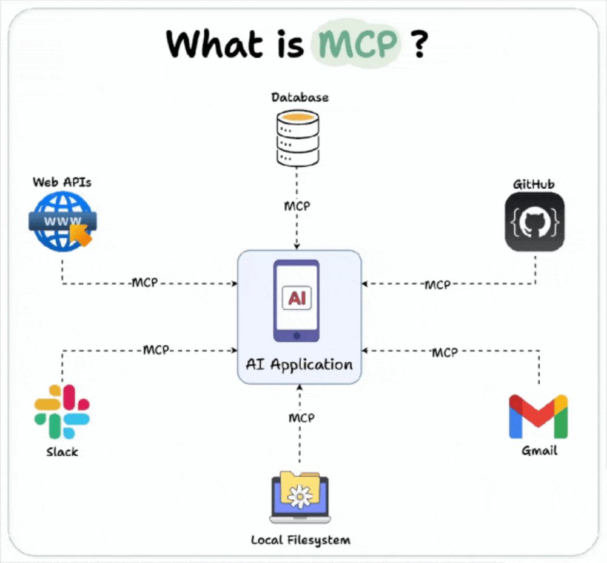
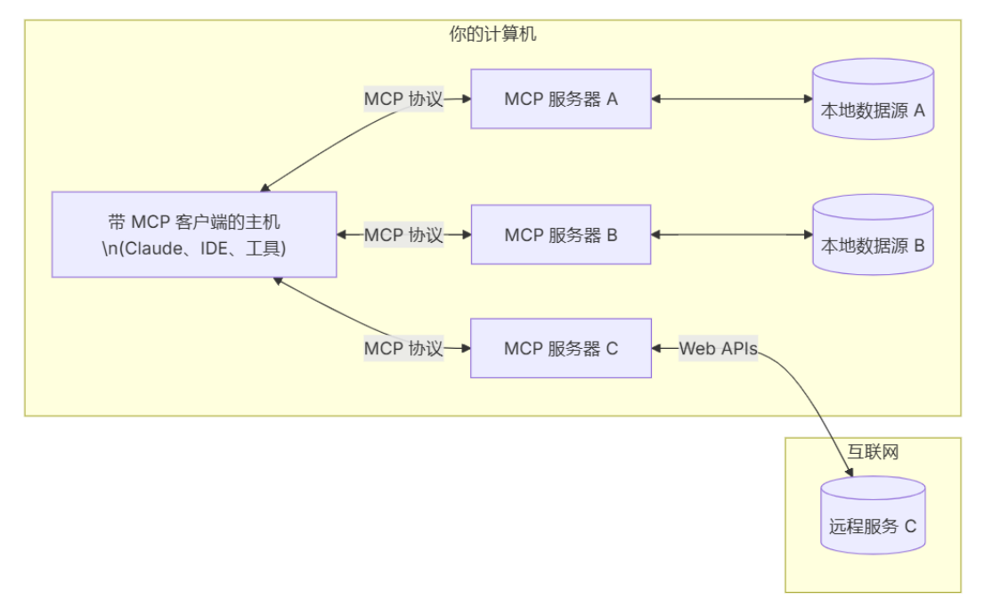
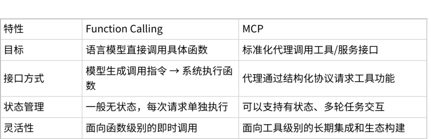

MCP（Model Context Protocol）
随着 AI Agent 技术的发展，系统中可调用的工具、数据资源以及外部服务越来越多。在简单的应用中，开发者可以通过手动配置 Tool 或 Function 来完成调用，但当系统规模不断扩大时，工具管理、资源访问以及上下文传递都会变得越来越复杂。
例如，一个企业级 AI Agent 系统可能需要访问：
-
企业内部数据库
-
文档知识库
-
搜索服务
-
文件系统
-
API 服务
-
第三方 SaaS 系统
如果每一种资源都通过单独的接口接入，那么系统架构会变得非常混乱，同时也难以实现统一的权限控制与上下文管理。为了解决这一问题，提出了 MCP（Model Context Protocol，模型上下文协议）。

MCP 的核心目标是：
为大模型提供统一的工具、资源和上下文访问协议，使 AI Agent 可以以标准化方式访问外部系统。简单来说，MCP 相当于为 AI Agent 构建了一层标准化的能力接口层，使得模型可以像访问操作系统资源一样访问各种工具和数据。
MCP 概念
MCP（Model Context Protocol）是一种用于连接大模型与外部系统的开放协议。

它的设计目标是让模型能够安全、标准化地访问各种外部资源。在传统 AI 系统中，模型通常只能访问有限的输入信息，例如：
-
用户问题
-
系统 Prompt
-
历史对话
-
而 MCP 则扩展了模型可访问的上下文来源，使模型可以动态获取更多信息，例如：
-
企业数据库数据
-
文件系统内容
-
知识库文档
-
实时 API 数据
-
外部工具执行结果
因此，在 MCP 架构下，大模型不再只是一个文本生成组件，而是成为一个能够主动获取上下文并执行任务的智能代理。
从系统结构来看，MCP 主要解决三个问题：
第一，统一工具访问方式。
不同工具可以通过 MCP 注册为标准能力，模型可以通过统一接口调用。
第二，统一资源访问方式。
文件、数据库、API 等资源都可以通过 MCP 暴露给模型。
第三，统一上下文管理。模型在推理过程中所需的上下文可以通过 MCP 动态获取，而不是完全依赖 Prompt。
MCP 架构
从系统设计角度来看，MCP 通常位于 LLM 与外部系统之间，充当一个能力协调层。一个典型的 MCP 架构如下：
flowchart TD
user[User] --> agent[AI Agent]
agent --> reasoning[LLM Reasoning]
reasoning --> client[MCP Client]
client --> server[MCP Server]
server --> resources[Tools / Data / Services]在这一架构中，各组件承担不同职责。
User
用户向 AI Agent 提出问题或任务请求，例如查询数据、执行操作或分析信息。 AI Agent
Agent 负责整体任务协调，包括：
-
解析用户需求
-
触发模型推理
-
调用工具或资源
-
整合最终结果
LLM Reasoning
大模型负责推理和决策，例如：
-
是否需要访问外部资源
-
调用哪个工具
-
需要哪些上下文信息
MCP Client
MCP Client 是 Agent 侧的组件，用于向 MCP Server 发起请求。
当模型需要访问资源或调用工具时，Agent 会通过 MCP Client 向服务器发送请求。
MCP Server
MCP Server 是 MCP 架构中的核心组件，它负责：
-
管理所有工具和资源
-
提供统一的访问接口
-
执行工具调用
-
返回执行结果
Tools / Data / Services
这些是系统真正的能力来源，包括：
-
业务 API
-
企业数据库
-
文件系统
-
搜索引擎
-
计算服务
MCP Server 会将这些能力统一封装，并暴露给 AI Agent。
MCP 的核心优势
相比传统的 Tool Calling 或 Function Calling，MCP 提供了更系统化的能力管理方式。首先是统一标准接口。所有工具和资源都可以通过 MCP 以统一协议接入，这大大降低了系统集成复杂度。其次是可扩展能力体系。当需要新增工具或数据源时，只需要在 MCP Server 中注册即可，不需要修改 Agent 核心逻辑。第三是上下文动态获取能力。模型在推理过程中可以根据需要获取新的上下文信息，而不是依赖一次性输入。最后是安全与权限控制。 MCP 可以在服务器层实现访问控制，确保模型只能访问授权资源。
MCP 在 AI Agent 系统中的作用
在现代 AI Agent 架构中，MCP 可以看作是 Agent 的能力基础设施。它主要承担三个关键角色：
能力管理中心
所有工具和资源通过 MCP 注册和管理。
上下文提供层
模型在推理时可以动态获取所需信息。
系统集成层
企业内部系统、外部 API 和数据资源都可以通过 MCP 接入。因此，在大型 AI Agent 系统中，MCP 往往成为连接 LLM、工具系统以及企业数据平台的核心组件。
Function Calling 与 MCP 的区别
Function Calling 和模型上下文协议（MCP） 都涉及模型与外部功能交互，但侧重点不同：

简而言之，Function Calling 更像是“模型内部的即时函数调用”，而 MCP 是“代理与外部工具的标准化接口”，两者可以结合使用：代理通过 MCP 集成工具，内部语言模型通过 Function Calling 调用具体函数，实现更智能的操作。